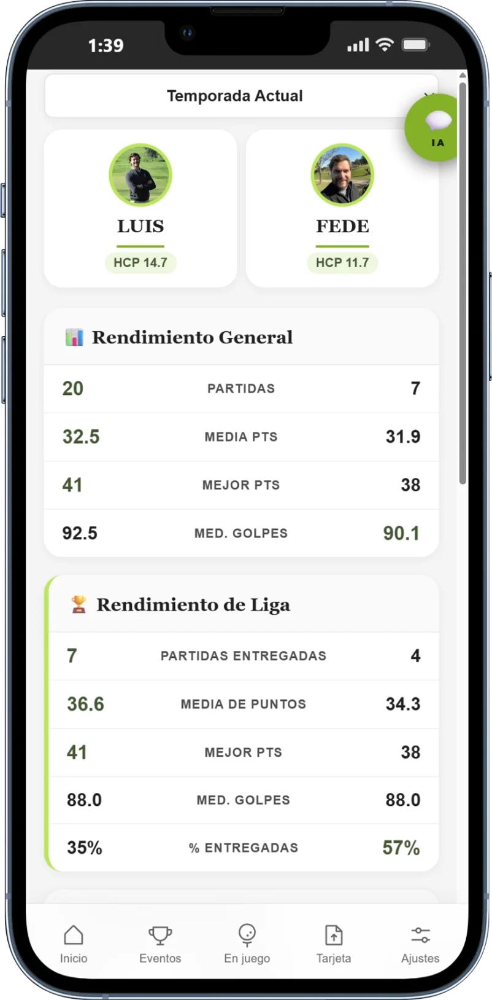
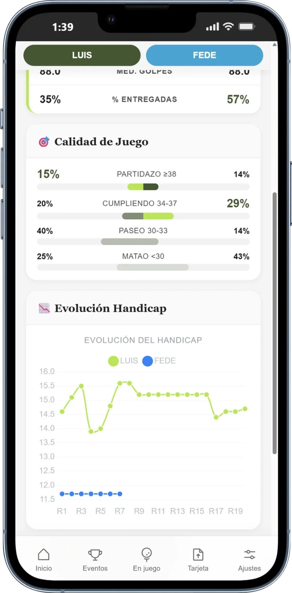
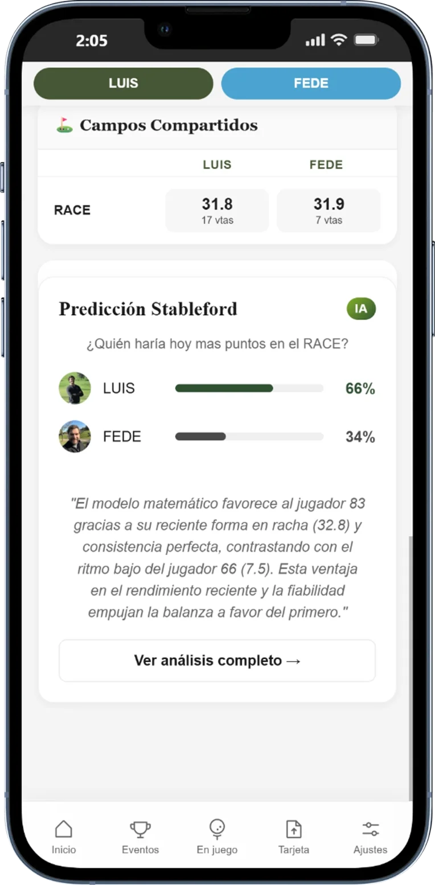
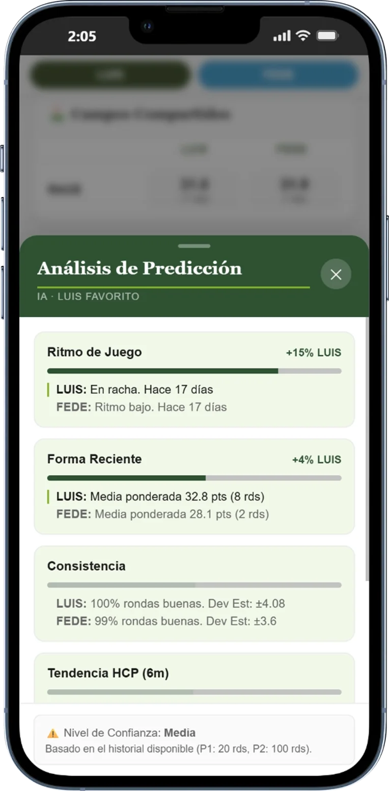
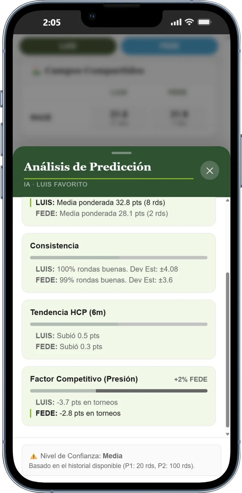

Compara a cualquier jugador de la liga con otro: métricas, calidad de juego, evolución del hándicap, rendimiento en campos comunes y una predicción IA de quién ganaría un partido hoy.
Selecciona dos jugadores de tu liga y obtén el análisis completo al instante
Un enfrentamiento estadístico completo
Elige dos jugadores de tu liga y la app genera en segundos una comparativa con cuatro bloques: rendimiento en números, calidad de sus rondas, evolución del hándicap en paralelo, campos donde ambos han jugado, y una predicción IA con los factores que decantarían el partido a favor de uno u otro.
① Métricas comparadas
Números frente a frente
Rendimiento general y rendimiento de liga.
Las métricas de ambos jugadores en dos columnas. Cada cifra compara directamente: la que va en verde es la mejor de los dos en ese indicador.
Rendimiento General — partidas jugadas, media de puntos, mejor score, media de golpes. Incluye todas las rondas, con o sin entrega.
Rendimiento de Liga — las mismas métricas filtradas a solo las tarjetas entregadas para clasificación, más el porcentaje de entrega (rondas que contaron para el ranking vs total jugadas).
El % de entregadas revela quién aprovecha mejor sus rondas para el ranking — un jugador puede jugar menos pero entregar más y estar mejor clasificado.

② Calidad de juego y evolución del hándicap
Consistencia · Hándicap en paralelo
¿Quién es más consistente?
Dos análisis complementarios que van más allá de la media: cómo se distribuyen las rondas entre buenas y malas, y cómo ha evolucionado el hándicap de cada uno a lo largo del tiempo.
Calidad de juego — distribución de rondas en 4 categorías con barras comparativas: Partidazo (≥38 pts), Cumpliendo (34-37), Paseo (30-33) y Matao (<30). Cuanto más alto el % en Partidazo, mejor.
Evolución del hándicap — gráfico de línea dual con el índice WHS de los dos jugadores ronda a ronda. Cada línea tiene su color. Se aprecia quién mejora más rápido y quién es más estable.

③ Campos comunes y predicción IA
Terreno común · Quién ganaría hoy
En los campos donde coinciden, ¿quién domina?
La comparativa termina con dos bloques especialmente reveladores: el rendimiento en campos donde ambos han jugado, y una predicción IA de quién sacaría más puntos si jugaran hoy.
Campos compartidos — media de puntos de cada jugador en los campos donde ambos tienen historial. Contexto directo sobre el terreno que conocen los dos.
Predicción Stableford — probabilidad de victoria de cada uno (ej. 66% vs 34%) calculada por IA con 7 factores estadísticos. Incluye una explicación en texto del motivo principal de la ventaja.
La predicción tiene un nivel de confianza que depende del historial disponible de cada jugador. Cuantas más rondas, más precisa.

④ Análisis detallado de la predicción
IA · 7 factores · Con nivel de confianza
No solo un porcentaje. Cada factor explicado.
Al pulsar "Ver análisis completo", se despliega un panel con el detalle de los 7 factores que componen la predicción. Cada factor muestra quién tiene ventaja, en cuánto y por qué.
Ritmo de juego
25%
Forma reciente ponderada. Con qué frecuencia juega cada uno.
Forma reciente
15%
Media ponderada de las últimas rondas.
Consistencia
15%
% rondas buenas y desviación estándar.
Tendencia HCP
15%
Si el hándicap mejora o empeora en los últimos 6 meses.
Factor competitivo
10%
Rendimiento bajo presión: diferencia en torneos vs pachangas.
Head-to-head
10%
Resultados directos históricos entre los dos jugadores.
El panel indica el nivel de confianza (Alta / Media / Baja) según el historial de cada jugador. Con menos de 5 rondas el modelo lo advierte explícitamente.


Que los datos hablen antes de que lo haga la excusa.
La comparativa y la predicción están disponibles para cualquier jugador de tu liga, en cualquier momento.